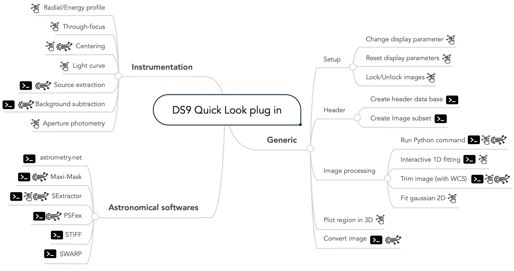

A Pythonic package
For all the reasons cited above, we decided to create the first Pythonic
DS9 plugin: pyds9plugin. It is a public domain DS9 extension for
quick-look image processing. It aims to extract quantifiable information
from imaging datasets with improved interaction. The plugin processing
functions can then be generalized automatically to a set of images to
turn the quick-look tool into a multiprocessing pipeline.
It enables new users, from undergraduate students to full-time researchers, to actively interact (process, model, plot, etc.) with astronomical image data with one integrated software package. This package, available both on Pypi and GitHub, has been extensively used within the FIREBall project and for CLAUDS catalogs generation. Before going any further, I highly recommend watching this youtube video for a better understanding of the package. The other videos that are linked in the document to present some functionality are all gathered here.
The way it works
DS9 incorporates the possibility to load extensions via an analysis
file. When the plugin is installed and the analysis file loaded into
the DS9 analysis menu, the extension can be used. The analysis
file is the interface linking DS9 GUI with the plugin's functions.
This file determines what menu is created within DS9, what parameters windows each
function launches, and what Shell command is interpreted. An example
parameter window is shown in next Figure.
Each pyds9plugin function is stored under DS9Utils access point, which links to
pyds9plugin.DS9Utils module. Then command lines begin by DS9Utils
followed by the function to be called and its arguments. pyds9plugin
will then communicate, control, and exchange data with DS9 GUI via
pyds9 package. The way the extension operates is illustrated in next.
Diagram representing the way the plugin is loaded within DS9 and called. pyds9plugin can be called from the terminal (through command lines) which bypasses the need for DS9 GUI.
Communication
Within the DS9 program, the XPA (X Public Access) messaging system
has been designed to provide seamless communication between DS9 GUI
and other Unix programs (Perl, Tcl/Tk). It also provides an easy way for
users to communicate with DS9 by executing XPA client shell
commands. The pyds9 module uses a Python interface for XPA to
communicate with DS9. It supports communication with all of DS9's
XPA access points in two ways. It enables read and write access to all
DS9 parameters, which allows controlling the display (load images,
display NumPy arrays and catalogs, change parameters, create regions /
DS9 plots, etc.). One interest in using Python is to use the full
capability of its famous packages such as matplotlib, which offers
other possibilities than the DS9 native plotting GUI.
SExtractor parameters window allows to show the different parameter possibilities offered by DS9. In addition to different menu types (entry, menu, and checkboxes, file system browser), the addition of tabs allows navigating through an important number of organized parameters.
Running a function
All the functions are directly accessible from DS9 GUI (within the
analysis menu). Accessing a function will make appear a parameter window
that will then call the plugin.
Navigating through the list of DS9Utils functions can be quite
cumbersome for newcomers. OSX built-in Command Finder / Launcher
provides an expeditive alternative that allows retrieving commands
extremely fast.
Some fundamental functions are available through shortcuts to gain time. The shortcuts are noted between parenthesis next to the function's name. The functions having a shortcut are: Open (o), lock (l), radial profile (r).

pyds9plugin's functions divided in the three sub-extensions: generic functions, instrumentation and astronomical software. The terminal icon emphasize functions that do not require DS9 to be launched, which can be interesting for generalizing the processing on a server. Most of these functions (highlighted with the wheel icon) are compatible with multi-image and multi-threaded analysis. Functions with enhanced interactivity based on pickable meta-data for instance are marked with the interactivity icon.
 Functions are divided into three main menus: Generic functions, Instrumentation-AIT, and Astronomical software, and can be easily accessible via the command finder in the analysis menu bar
Functions are divided into three main menus: Generic functions, Instrumentation-AIT, and Astronomical software, and can be easily accessible via the command finder in the analysis menu bar
Logging and verbosity
The functions are silent when launched from DS9 and will only return
nominal outputs (images, regions, messages). If the code encounters an
error, the error message will pop up. If you run the same command from
the terminal, you will have, in addition, all the verbosity from
pyds9plugin. On top of that, all the logging is saved in
\(\sim\)/DS9QuickLookPlugIn/pyds9plugin_activity.log whether the
function is launched from the terminal or DS9 user interface.